Below is just a coarse overview of ggplot2. See the following ggplot tutorial for more examples. Lots of other tutorials out there.
All plots start with ggplot() function. In this function, you tell it what data to use for all added layers and what are the x/y variables. Here, I will plot hp (horsepower) vs mpg (miles per gallon).
Above shows the setup of the plot, it has no points/lines (aka geometric shapes) because we have not specified geom_xxx() (e.g. geom_point, geom_line(), geom_boxplot)
ggplot( mtcars, aes(hp, mpg) ) + # notice you can drop x=,y=
geom_point() # new layer to add points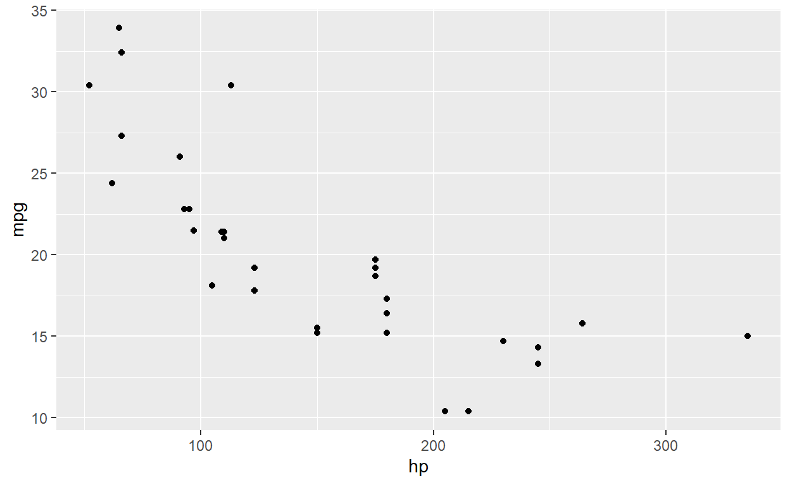
ggplot( mtcars, aes(hp, mpg) ) +
geom_point( color='red', shape=4, size=3) # change attributes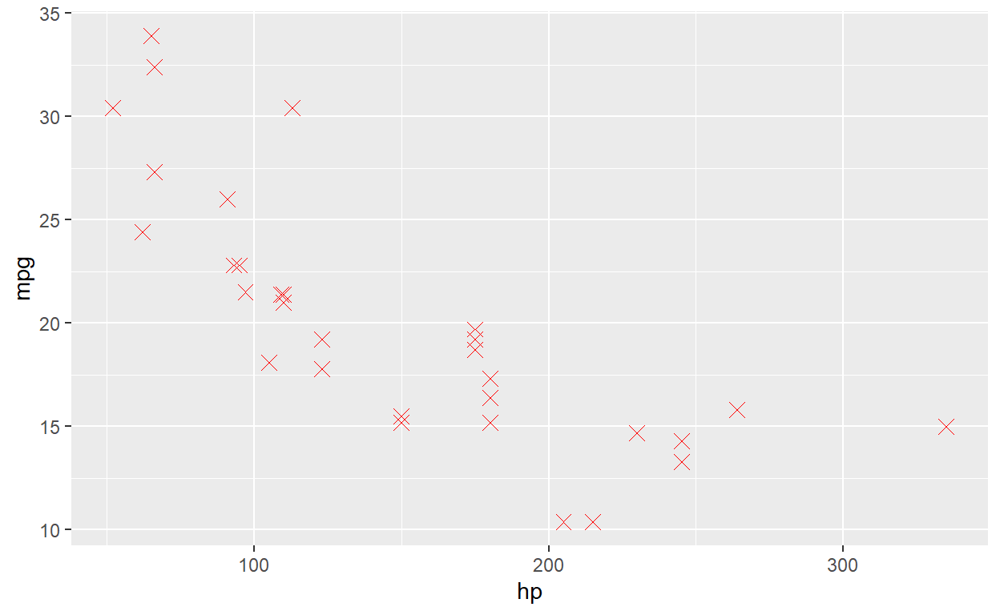
You can just add more and more layers. You might want to add a smoother.
ggplot( mtcars, aes(hp, mpg) ) +
geom_point() +
geom_smooth() # add a smoother/relationship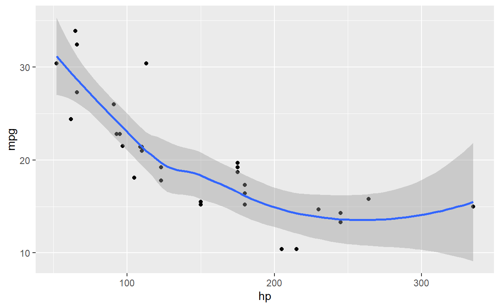
Now, let’s see some basic changes that you might want to do…
ggplot( mtcars, aes(hp, mpg) ) +
geom_point() +
geom_smooth(fill='blue', alpha=0.2 ) + # change color of the error band
labs( x='Horsepower', y='MPG', title='Title') + # add in some labels
ylim(0,40) # set y-axis limits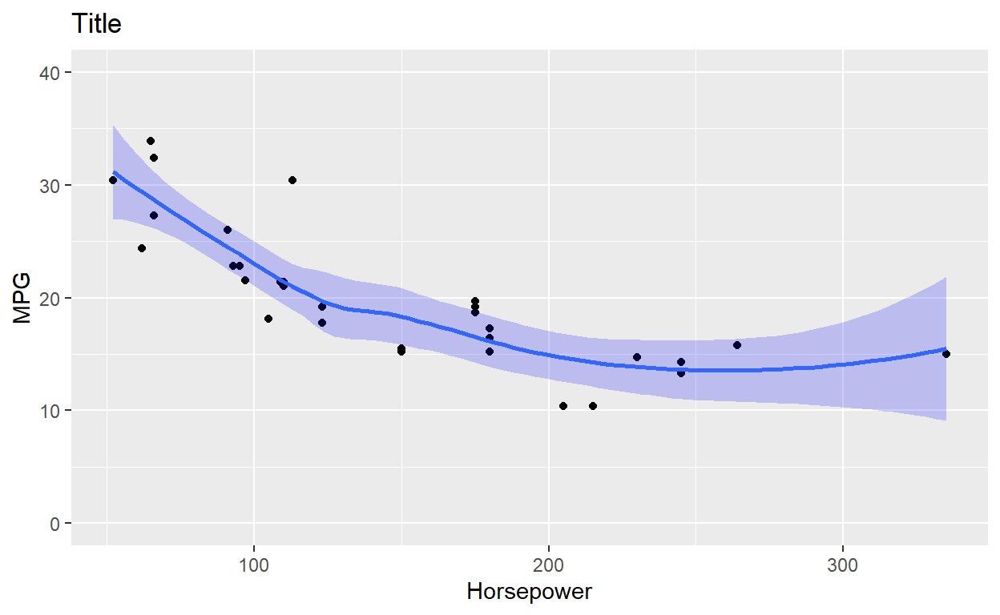
There are different theme_xxx() in ggplot to change how the graph looks…
ggplot( mtcars, aes(hp, mpg) ) +
geom_point() +
geom_smooth(fill='blue', alpha=0.2 ) +
labs( x='Horsepower', y='MPG', title='Title') +
ylim(0,40) +
theme_classic() # there are themes that change overall formatting... type theme_ and see what autofills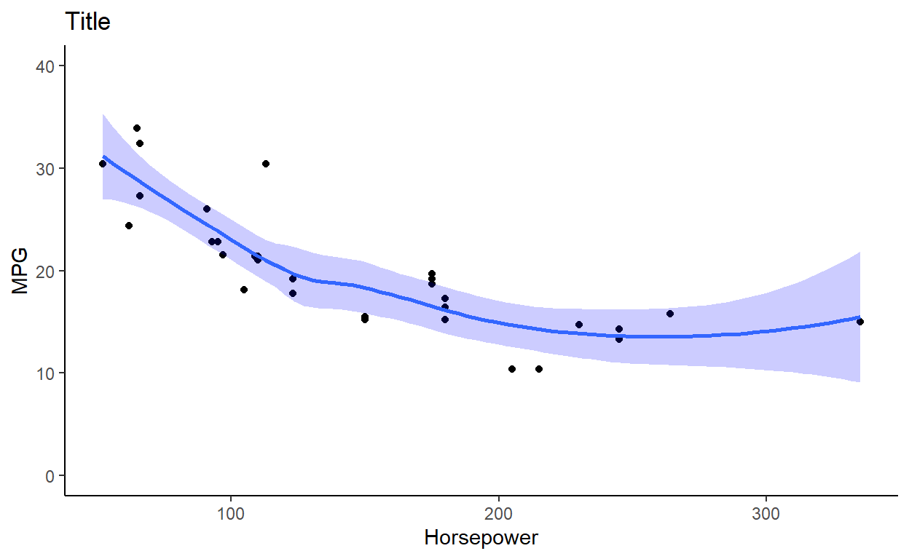
Often you want to break a graph apart by a group variable (like a treatment factor). You can do this by setting an attribute: color=,alpha= (transparency), size= (makes a bubble plot).
ggplot( mtcars, aes(hp, mpg, color=factor(cyl) ) ) + # using factor to turn cyl from numeric to character/factor
geom_point() +
geom_smooth( method='lm') # running linear model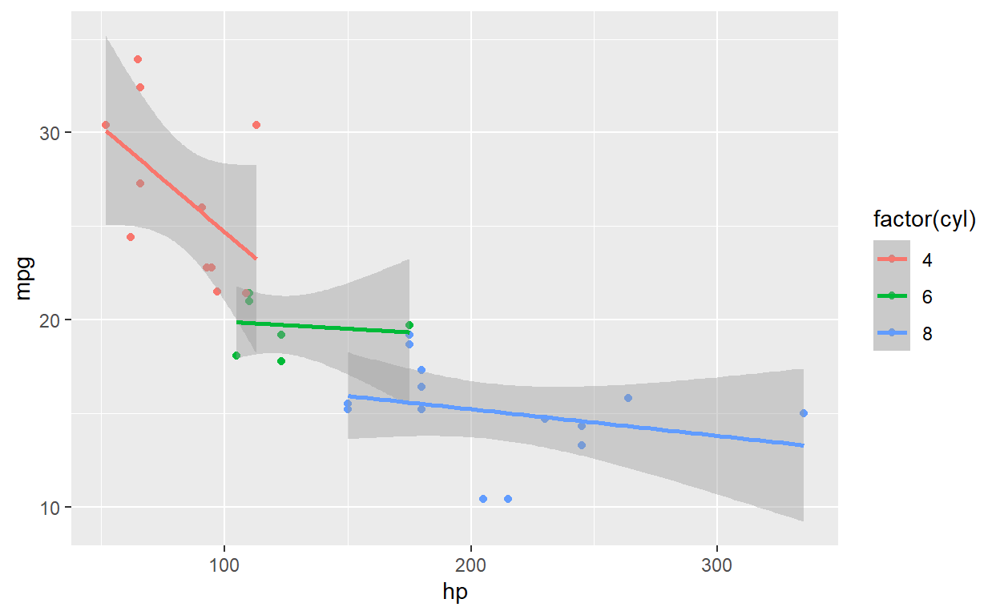
ggplot( mtcars, aes(hp, mpg ) ) + # using factor to turn cyl from numeric to character/factor
geom_point( aes(size=factor(cyl), color=factor(cyl) ) ) + # I am going to add here so only point change
geom_smooth( method='lm') # running linear model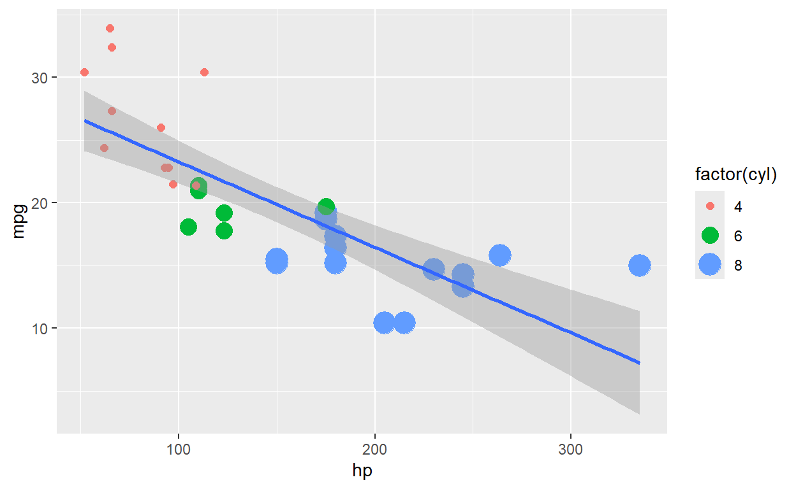
For one variable you can use facet_wrap(~group) or facet_grid(~group). For two variables, use facet_grid(grp_1~grp_2)
ggplot( mtcars, aes(hp, mpg, color=factor(cyl) ) ) +
geom_point() +
geom_smooth( method='lm') +
facet_wrap(~cyl, ncol=2) # added a variable to break up 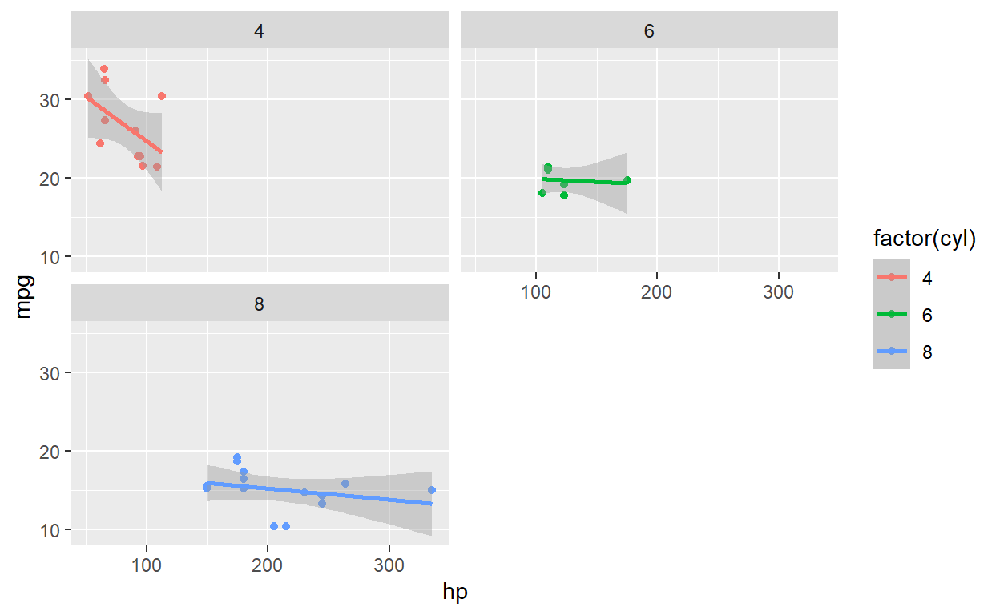
The facet_grid() is setup that the first variable determines row and second the column [facet_grid(row ~ column)]
ggplot( mtcars, aes(hp, mpg, color=factor(cyl) ) ) +
geom_point() +
geom_smooth( method='lm') +
facet_grid(~cyl, scales='free_x') 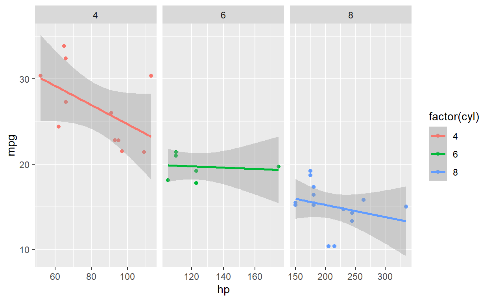
ggplot( mtcars, aes(hp, mpg, color=factor(cyl) ) ) +
geom_point() +
geom_smooth( method='lm') +
facet_grid(cyl~vs) # added a variable to break up two variables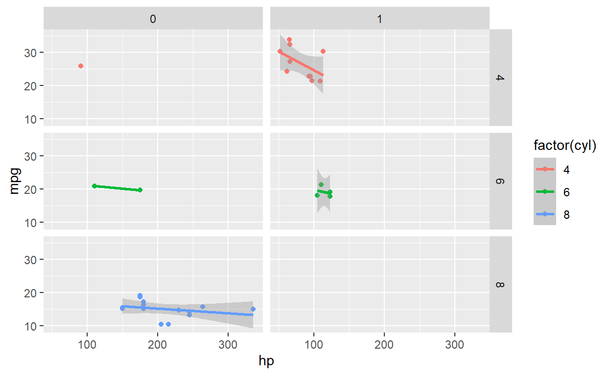
For interactive ggplots, there are packages that convert a ggplot object to an interactive object. See two packages below:
Now, plotly package does a great job at interactive plots. You can write you code in ggplot and then just convert as shown in code below.
library(ggplot2)
library(plotly)
f <- ggplot( cars, aes(speed, dist) ) + geom_point() + geom_smooth()
plotly::ggplotly(f)ggiraph package
library(ggiraph)
library(tidyverse)
library(patchwork)
mtcars_db <- rownames_to_column(mtcars, var = "carname")
# First plot: Scatter plot
fig_pt <- ggplot(
data = mtcars_db,
mapping = aes(
x = disp, y = qsec,
tooltip = carname, data_id = carname
)
) +
geom_point_interactive(
size = 3, hover_nearest = TRUE
) +
labs(
title = "Displacement vs Quarter Mile",
x = "Displacement", y = "Quarter Mile"
) +
theme_bw()
# Second plot: Bar plot
fig_bar <- ggplot(
data = mtcars_db,
mapping = aes(
x = reorder(carname, mpg), y = mpg,
tooltip = paste("Car:", carname, "<br>MPG:", mpg),
data_id = carname
)
) +
geom_col_interactive(fill = "skyblue") +
coord_flip() +
labs(
title = "Miles per Gallon by Car",
x = "Car", y = "Miles per Gallon"
) +
theme_bw()
# Combine the plots using patchwork
combined_plot <- fig_pt + fig_bar + plot_layout(ncol = 2)
# Combine the plots using cowplot
# combined_plot <- cowplot::plot_grid(fig_pt, fig_bar, ncol=2)
# Create a single interactive plot with both subplots
interactive_plot <- girafe(ggobj = combined_plot)
# Set options for the interactive plot
girafe_options(
interactive_plot,
opts_hover(css = "fill:cyan;stroke:black;cursor:pointer;"),
opts_selection(type = "single", css = "fill:red;stroke:black;")
)Check out ggnimate to see a tutorial
Example showing strontium profiles over life of a fish and likely location.
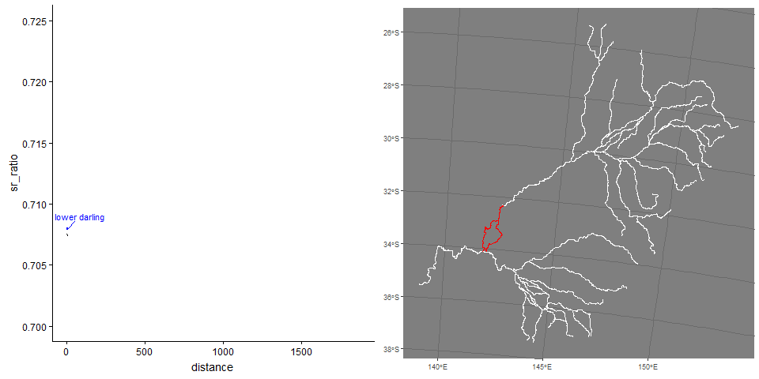